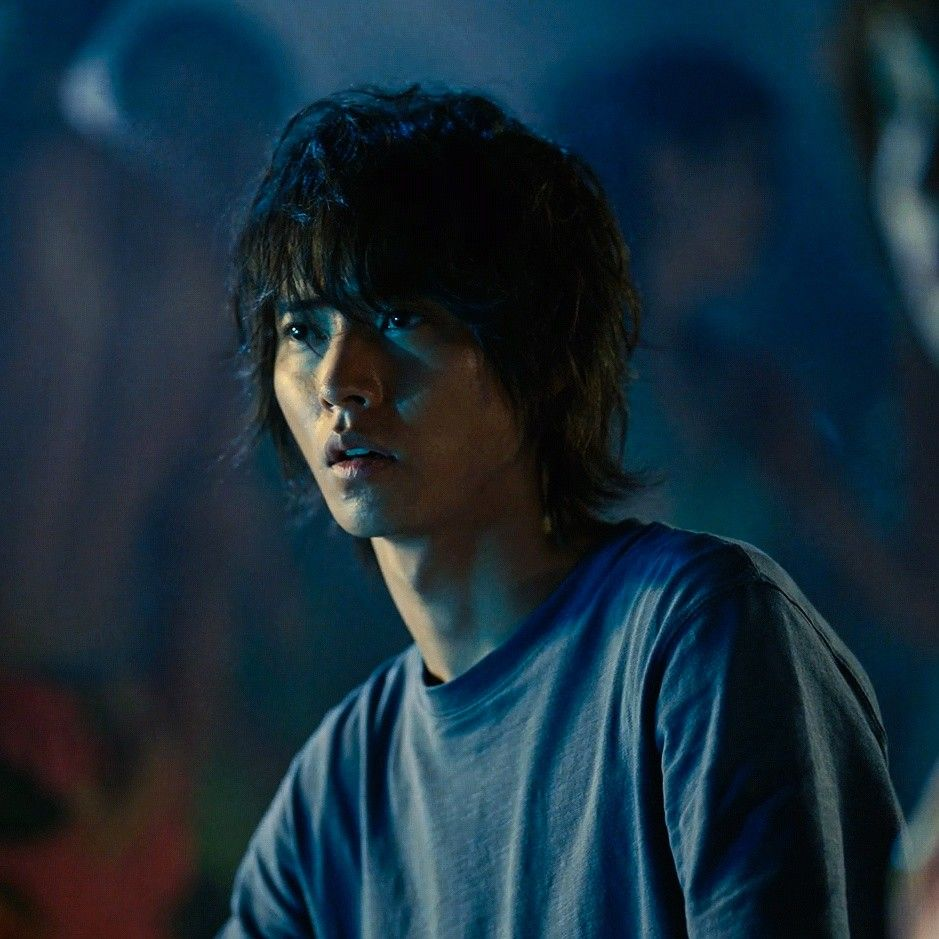
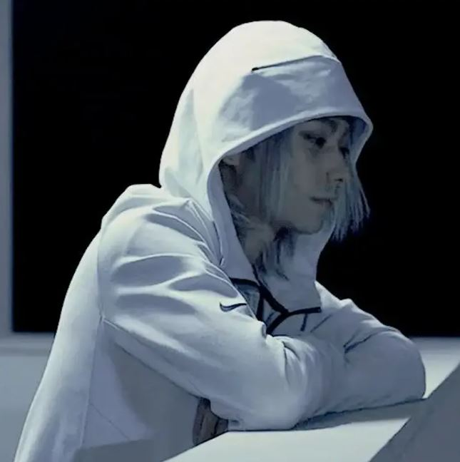

Alice In Borderland

What is Alice in Borderland?
Alice in Borderland takes place in modern-day Tokyo after an unexplained event wipes out most of this major city. The survivors who are left are given visas to stay in this new realm, known as Borderland. When their visas expire, they’re shot on sight by a laser. The only way to extend a visa and keep living is to compete in a series of games. Each game has been assigned a different card. The suit of each refers to the type of game — Spades are strength, Clubs are team battles, Diamonds are battles of wits, and Hearts are games of betrayal — and the number refers to the level of difficulty. It’s a simple system for a really messed up concept.
Characters

Ryohei Arisu
Arisu—a listless, jobless and video-game-obsessed young man—suddenly finds himself in a strange, emptied-out version of Tokyo in which he and his friends must compete in dangerous games in order to survive. In this strange world, Arisu meets Usagi, a young woman who's navigating the games alone.
Yuzuha Usagi
Usagi was troubled by social relationships since her childhood for not siding with the majority. Usagi was physically capable when she was very young thanks to her mountaineer father and the 2 would climb together when he returned to Japan from overseas expedition.
Hikari Kuina
Kuina has an easy-going and casual demeanor, seeming to get along with everyone, including Chishiya. Throughout the series, she is revealed to care for the surrounding people, and will stand up for those she thinks are doing the right thing.
Shuntaro Chishiya
Chishiya is mostly seen sneering even when he is angry unless he becomes emotional or regretful, which occurs only a few times.He is calm, highly intelligent and manipulative, and analytical at all times, making him a potentially strong Hearts and Diamonds player, even though he claimed to not be suited for Hearts.

References
• https://americasuits.com/alice-in-borderland-s02-shuntaro-chishiya-hoodie
• https://wallpapers.com/alice-in-borderland
• https://www.pinterest.com/pin/kuina-aya-asahina--973833119395974440/
• https://www.pinterest.ph/pin/686306430714450483/
• https://www.pinterest.ph/pin/973833119395934746/
• https://www.rottentomatoes.com/tv/alice_in_borderland/s01